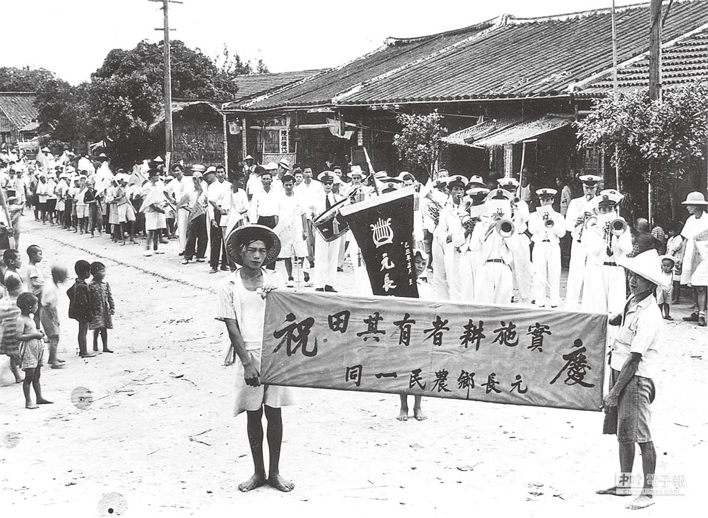

耕者有其田是1953年中華民國政府在臺灣實施的土地改革政策。在國共內戰結束後，中國國民黨政府接管台灣之後實施。政策的目的是為了解決土地不公和農民貧困的問題，並促進農業生產的發展。 根據「耕者有其田」政策，政府實行土地徵收和重新分配的措施。大規模的農地從地主手中徵收，並分配給農民耕種。這樣做的目的是為了縮小土地所有權的不平等，讓農民擁有自己的土地，從而提高他們的經濟地位和生活條件。該政策還包括了農地所有權的確認和登記，確保農民合法擁有他們耕作的土地。 「耕者有其田」政策在當時的台灣起到了重要的作用。它解決了土地不公的問題，促進了農業生產的發展，提高了農民的生活水平。同時，這項政策也為台灣的土地改革和農村發展奠定了基礎，對後續的經濟發展和社會穩定產生了深遠的影響。 中華民國政府於1949年實行三七五減租，於1951年實行公地放領，於1953年實行耕者有其田。
1947年3月20日臺灣省行政長官公署「從字第一〇〇五〇號訓令」規定，佃農應繳之耕地地租， 依正產物1000分之375計算，是為「三七五減租」；但當時各級政府推行不力。1949年4月14日 臺灣省政府發布行政命令「臺灣省私有耕地租用辦法」，更陸續訂定「臺灣省私有耕地租用辦法 施行細則」、「臺灣省辦理私有耕地租約登記注意事項」、「臺灣省推行三七五減租督導委員會 組織規程」及「臺灣省各縣市推行三七五減租督導委員會組織規程」等行政命令，以貫徹三七五 減租政策。後為確保推行三七五減租已獲得之初步成果，於1951年6月7日制定公布「耕地三七五 減租條例」作為法律依據。
同時1951年至1976年間分九期實施先辦理公地放領，連同1948年試辦部份，共計放領138,957公頃 ，承領農戶286,287戶。政府收得放領公地地價稻穀367,366,416公斤、甘藷1,254,768,525公斤， 全數由台灣土地銀行經收後撥作扶植自耕農基金。
 圖片來源: 中時新聞網
台灣經濟發展小知識:
戰後初期（1945-1953）
為了重建台灣經濟，政府在1949年起進行金融幣制改革， 5月切斷和大陸貨幣的匯率聯繫，6月發行新臺幣，陸續推動土地改革， 例如：三七五減租、公地放領及耕者有其田等政策